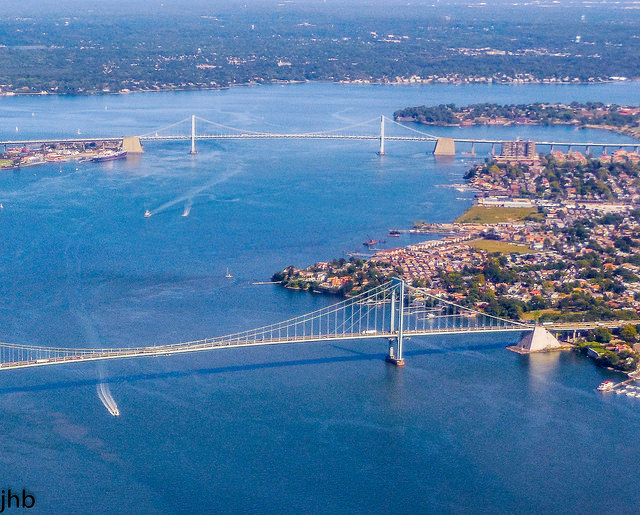
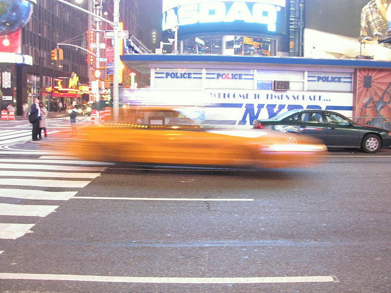
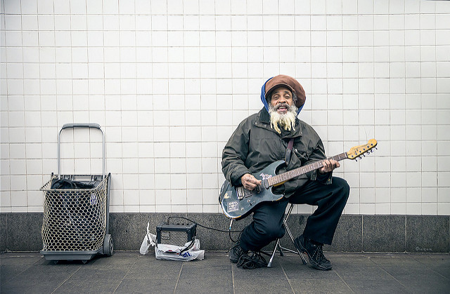

New York City may be a concrete jungle, but there’s more green space than you think. About 29,000 acres—or 14 percent of the city—is parkland.

The city also boasts 14 miles of beaches.

Why are NYC’s cabs yellow? Because back in 1907, a car salesman suggested yellow was the easiest color to spot from a distance.
Today, nearly 40 percent of New Yorkers are born outside of the U.S.
When the Brooklyn Bridge was built, New Yorkers were afraid it would collapse. To calm locals down, P.T. Barnum safely led 21 elephants across the bridge.

The performers you hear on the subway platform? They have to audition if they want to be officially recognized by the MTA. (The ones who actually board your train are breaking the rules.)
With 34 lines and 468 stations, the city’s subway track is longer than the New York State thruway by over one hundred miles!
If Brooklyn were its own city, it would be the fourth-most populous in the country.
In New York you’ll find The Met which is one of the world’s most famous art museums, and the Guggenheim Museum which is also extremely well-known. Aside from art, New York is also home to the American Museum of Natural History which is also extremely famous.
If you’re a non-US citizen and you plan on buying anything in Macy’s, before you do go to the Visitor Centre near the Broadway entrance with your passport. Once you do you’ll be given the Macy’s discount card which knocks 11% off most goods.